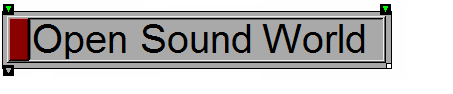

|

|
Transform Reference Guide
|
Complex-number functions
In addition to the standard math functions, most of which support complex numbers, there are several additional functions that only work with complex numeric types (Complex and DoubleComplex).
Returns the angle of a number in the complex plan. To obtain the corresponding radius, use Abs.
Returns the complex conjugate of complex number a+bi: a-bi.
Returns the imaginary portion of a complex number.
Returns the norm of complex number a+bi: a2+b2
Returns the real portion of a complex number.
See Also
- Complex
- DoubleComplex
- Math functions
- Expr
Open Sound World User Guide
© 2000-2004 Amar Chaudhary. All rights reserved.